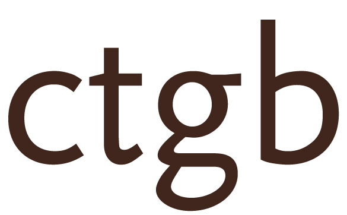

Het
College voor de toelating
van gewasbeschermingsmiddelen en
biociden
beslissende op het bezwaarschrift van Denka Registrations B.V. van 24 oktober 2012 tegen de besluiten van 28 september 2012 tot intrekking per 1 november 2012 van de toelatingen voor Lurectron Nevelautomaat en Lurectron Nevelautomaat Extra, insecticiden op basis van de werkzame stof dichloorvos.
Het bezwaar is geregistreerd onder nummer 2012-98.
De bestreden besluiten
De besluiten tot intrekking zijn door het college genomen op grond van het besluit tot niet-plaatsing van de werkzame stof dichloorvos op de Annex bij richtlijn 98/8/EG.
In het niet-plaatsingsbesluit wordt als grond voor de niet-plaatsing aangegeven dat de risico evaluatie van biociden uit PT 18 die dichloorvos bevatten een mogelijk en onacceptabel risico voor mens en milieu laat zien. Het niet-plaatsingsbesluit bepaalt dat lidstaten niet toestaan dat biociden die dichloorvos bevatten vanaf 1 november 2012 nog op de markt worden geplaatst.
De besluiten bevatten geen aflevertermijn, omdat deze op grond van het niet-plaatsingsbesluit niet gegeven mag worden.
De besluiten bevatten geen opgebruiktermijn omdat er sprake is van een risico voor de gezondheid van de mens.
De bezwaren
Bezwaar wordt gemaakt tegen het feit dat het Ctgb de toelatingen op zeer korte termijn intrekt zonder aflever- en opgebruiktermijn toe te kennen. Bezwaarde stelt dat het Ctgb ten onrechte geen rekening houdt met legitieme verwachtingen, bestaande voorraden, planning, inkoop, langlopende contracten e.d. Bezwaarde stelt dat het Ctgb ten onrechte de risico’s die in het kader van de plaatsingsprocedure zijn vastgesteld zonder meer extrapoleert naar onderhavige middelen.
Overwegingen van het college
Het college accepteert niet het argument van bezwaarde dat bezwaarde niet eerder rekening had kunnen houden met de datum van intrekking. Van degene die verantwoordelijk is voor het in de handel brengen van biociden mag worden verwacht dat hij de Europese ontwikkelingen ten aanzien van deze biociden volgt en weet heeft van de in het Publicatieblad gepubliceerde besluiten van de Europese commissie die deze biociden rechtstreeks raken.
Bezwaarde behoorde vanaf 10 mei 2012 weet te hebben van de datum waarop zijn biociden niet meer op de markt zouden mogen worden gezet.
Onder op de markt zetten wordt volgens artikel 2 van richtlijn 98/8/EG verstaan: iedere levering al dan niet tegen betaling (...).
Het college kan meegaan met het argument dat een risico voor de gezondheid van de mens niet eenvoudigweg kan worden aangenomen op grond van het niet-plaatsingsbesluit, maar dat in het licht van het niet-plaatsingsbesluit gekeken moet worden naar het risico dat de toegelaten toepassingen van de biociden in kwestie met zich brengen.
Het college stelt vast dat Lurectron Nevelautomaat en Lurectron nevelautomaat Extra zijn beoordeeld met dezelfde eindpunten als aangegeven in de draft final CAR dichloorvos (de final CAR is niet beschikbaar).
Aangezien in de beoordeling dezelfde eindpunten gebruikt worden als in de draft final CAR en er is geoordeeld dat met persoonlijke beschermmaatregelen (gloves, coverall and respiratory protection) het gebruik van Lurectron nevelautomaat en Lurectron Nevelautomaat Extra veilig is, is er geen reden geen opgebruiktermijn toe te kennen.
Afzien van het horen door de adviescommissie
Bezwaarde heeft medegedeeld zich neer te leggen bij de conclusies van het college dat het niet-plaatsingsbesluit geen ruimte laat voor het geven van een aflevertermijn, maar dat wel een opgebruiktermijn van 1 jaar kan worden verleend.
Bezwaarde ziet af van het recht te worden gehoord door de adviescommissie voor de bezwaarschriften.
Besluit
De besluiten van 28 september 2012 tot intrekking van de toelating van de middelen Lurectron Nevelautomaat (11016N) en Lurectron Nevelautomaat Extra (11100N) worden als volgt herzien:
* Een aflevertermijn wordt niet gegeven omdat het niet-plaatsingsbesluit hiervoor geen mogelijkheid biedt;
* Het middel mag worden opgebruikt tot 1 november 2013.
Een ieder wiens belang rechtstreeks bij dit besluit is betrokken, kan op grond van artikel 119, eerste lid, van de wet gewasbeschermingsmiddelen en biociden tegen dit besluit binnen zes weken na de dag van publicatie in de Staatscourant beroep instellen bij het College van Beroep voor het bedrijfsleven, Postbus 20021, 2500 EA Den Haag. Het beroepschrift moet op grond van artikel 6:5 van de Algemene wet bestuursrecht (Awb) zijn ondertekend en bevat tenminste de naam en adres van de indiener, de dagtekening, de omschrijving van het besluit waartegen het beroep is gericht, zo mogelijk een afschrift van dit besluit, de gronden waarop het beroepschrift rust. Van de indiener van het beroepschrift wordt griffierecht geheven door de griffier van het College. Nadere informatie over de hoogte van het griffierecht en de wijze van betalen wordt door de afdeling Griffie van het College verstrekt.
Wageningen, 7 november 2012
HET COLLEGE VOOR DE TOELATING VAN GEWASBESCHERMINGSMIDDELEN EN
BIOCIDEN ,
ir. J.F. de Leeuw
de voorzitter